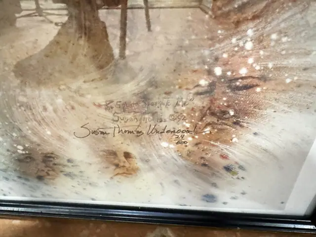
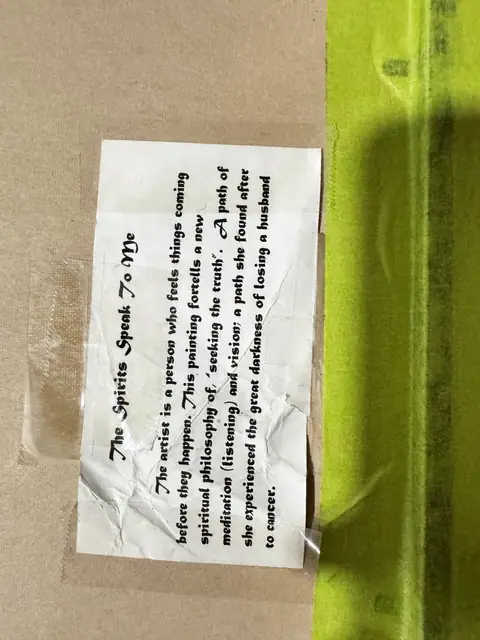

Paintings & Prints
Susan Thomas Underwood 'The Spirits Speak To Me', Signed and Numbered
Susan Thomas Underwood
Price Upon Request



About the Item
SUSAN THOMAS UNDERWOOD 'The Spirits Speak To Me'. Figurative portrait, pencil titled, numbered from an edition of 200 and signed in the lower margin. Artist's statement label affixed to the reverse. Presented in a dark and gilt frame under glass.
About the Artist
Susan Thomas Underwood is an American artist and writer of Shawnee tribal affiliation who studied at Oklahoma State University and the University of Oklahoma and taught art in schools. Known for paintings on Native American spiritual themes, she published the books Walk with Spirit and Seeks Truth to accompany her images.
Details
- Creator:
- Susan Thomas Underwood
- Dimensions:
- Height: 16.5 in (41.91 cm)
Width: 13.0 in (33.02 cm)
outside of frame - Edition:
- /200
- Condition:
- Offered in the condition shown in the photographs.
- Reference Number:
- VO-45